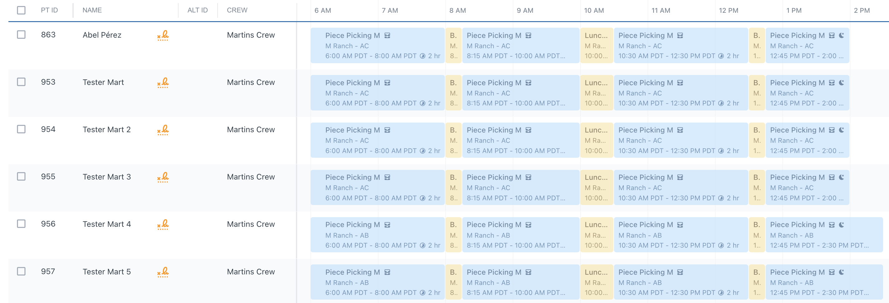

Welcome to Your Training Hub
This guide covers every section of PickTrace Office. Use the sidebar to navigate to any module. Each topic includes step-by-step instructions and a short video walkthrough so you can follow along directly in the app.
Add your walkthrough video here
/videos/dashboard/overview.mp4PickTrace Office is the web-based back office for your agricultural operation. It receives data from handheld devices in the field in real time and gives your office team the tools to audit, correct, and process that data for payroll.
Sidebar Navigation at a Glance
| Section | What you do here |
|---|---|
| Dashboard | Production & cost summary, Work Bundle totals |
| Timecards | View, edit, audit, and approve employee time records |
| Production Records | View and correct piece-pay records (bins, trays, trees, etc.) |
| Crew Scheduler | Schedule crews to jobs, sites, locations, and set piece rates |
| Reports | Build, save, and export custom data reports |
| Payroll | Map pay codes, export payroll files to your payroll system |
| Employees / Employers / Crews | Manage workforce profiles and crew assignments |
| Devices | Monitor and manage handheld devices in the field |
| Admin Center | Configure crops, work bundles, jobs, sites, and user roles |
| Pulse | Real-time analytics: Live, Costing, Production, Performance, Compliance |
Timecards
View, create, edit, audit, and manage every time record generated by your field devices. This is where daily auditing and payroll prep happens.

Timecards capture every activity an employee performs — start time, end time, duration, Job, Site, Location, pay style, rate, Production Records, Crew, and Employer. Each time a worker is checked into an activity on a device, a Timecard is created automatically.
Navigate to Timecards from the left sidebar.
Right-Click Context Menu
One selected: Navigate to Employee Profile · Edit · Duplicate · Transfer · Archive · Add New
Multiple selected: Edit Timecards · Switch Crew · Archive Timecards
Shift+Click selects a consecutive range. Ctrl+Click picks non-adjacent timecards.
Timeline View
Color-coded blocks per employee. Blue = Work Yellow = Break

List View
Tabular view with sortable columns. Best for bulk editing and CSV export.

Summary View
Aggregated totals per employee.

Date Navigation
Arrows step one day. Dropdown selects specific dates or presets.
Toolbar Actions
+ Add timecards / bulk breaks · Bulk checkout · Copy timecards · Select all
Zoom Slider
Timeline only — top-right corner. Zoom in for detail, out for full day.

Settings (Gear Icon)
Column visibility, records per page, records status, overnights toggle.
Bottom Status Bar
Shows employees, timecards, total hours, and minutes for the current view.
Click the Search ▾ dropdown in the top header to open Advanced Search.


Narrow by who worked and where.
Filter by what the employee was doing, how long, and on what device.
Surface errors, break violations, and penalty premium status.
Checkbox filters that show or hide specific record types.
How to Create a Timecard
 Adding by crew is faster when everyone is missing — type the crew name and all members are added in one step.
Adding by crew is faster when everyone is missing — type the crew name and all members are added in one step.Duplicate a Timecard
Copies all attributes from an existing timecard and assigns it to a different employee. Right-click → Duplicate Timecard. Change the employee name and any other details → Save.
 You can assign the duplicate to multiple employees at once — add several names before saving.
You can assign the duplicate to multiple employees at once — add several names before saving.Editing One Timecard
Select one timecard → right-click → Edit Timecard. The flyout shows all timecards for that employee on the selected day. Edit any attribute: start time, end time, crew, site, location, work bundle, job, pay style, rate.
Editing Multiple Timecards
Select multiple timecards (Shift+Click or Ctrl+Click) → right-click → Edit Timecards. Use checkboxes to apply bulk changes: Start Time, Checkout Time, Site & Location, Job, Pay Style & Rate, Duration.
Pay Rate Rule
Switching Crew
Select one or multiple timecards → right-click → Switch Crew → choose the correct crew → Save. Switch Crew works for both single and multiple selections.
Adding Breaks in Bulk
Fixing Double Break / Double Lunch
Daily Audit Walkthrough (Full Crew)
/videos/timecards/daily-audit.mp4Daily Audit Steps
PickTrace flags errors with a red icon next to the employee name. Click any error below to expand.
Symptoms
- 12:00 AM start time on the next day's card
- ~24 hours shown
- Timeline runs the entire day through 11:59 PM
- Bulk checkout changes skip this employee
Fix
Fix: Wrong Date on Bulk Checkout
/videos/timecards/errors/wrong-date.mp4Bulk checkout saves to tomorrow because a running timecard pushed past midnight.
Single Timecard
Bulk Edit
Single Timecard
Bulk Edit
Fix: Overlapping Timecards
/videos/timecards/errors/overlapping.mp4Find a coworker who did the same work → right-click their timecard → Duplicate → assign to the missing employee → adjust details → Save.
Archiving & Reviewing Timecards
/videos/timecards/archive-review.mp4Archive
Removes a timecard from reporting but does not delete it — it can be restored at any time. Select one or multiple → right-click → Archive Timecard(s).
Unarchive
Review & Approve
Reviewing marks timecards as audited and approved. Select timecards → right-click → Review Timecards.
Production Records
View and correct piece-pay records — bins, trays, trees, and any other unit your crews produce in the field.
Production Records Overview
/videos/production/overview.mp4Production Records are created on the handheld device when a crew leader or device user credits an employee with a unit of production (e.g., one bin, one tray, one tree). Each record is linked to an employee, a site, a location, a crop, a job, a unit count, and a piece rate.
Key Columns
| Column | What it shows |
|---|---|
| PT ID | Employee's PickTrace ID |
| Unit Count | Number of units credited |
| Unit | Type of unit (bins, trees, trays, etc.) |
| Piece Rate | Dollar amount per unit |
| Site / Location | Ranch and block where the work happened |
| Crop | Crop variety associated with the work |
Adding a Missing Production Record
/videos/production/add-record.mp4Updating Piece Rates
/videos/production/edit-piece-rate.mp4No Match Error
Fix: No Match Error
/videos/production/errors/no-match.mp4A production record exists but no matching timecard was found for that employee at that time.
Record Created at a Different Location
Fix: Wrong Location Error
/videos/production/errors/wrong-location.mp4The production record was credited at a different location than the employee's timecard at that time. Fix by updating the timecard's Site and Location to match the production record.
Crew Scheduler
Schedule your crews to jobs, sites, and locations before the day starts. This is where piece rates, job assignments, and break prompts are all configured.
Crew Scheduler Overview
/videos/crew-scheduler/overview.mp4The Crew Scheduler tells PickTrace where each crew will work, what jobs they'll do, and what rates apply — before the field day begins. Device users in the field see only the jobs and locations that were scheduled for their crew that day, reducing errors.
Creating a Crew Schedule
/videos/crew-scheduler/create-schedule.mp4Setting Piece Rates in the Crew Scheduler
/videos/crew-scheduler/piece-rates.mp4Piece rates are set per block within the Crew Scheduler. When you add a location to a schedule, you'll see a Piece Rate field for that block. Enter the dollar amount per unit (e.g., $2.00 per bin). This rate flows through to Production Records and ultimately to payroll.
Updating Break & Lunch Prompts
/videos/crew-scheduler/break-prompts.mp4Break and lunch prompts are configured per crew. Go to Crews in the sidebar → select the crew → Edit → under "Break and Lunch Prompt" toggle on/off, set the timing, and add additional prompts as needed → Save.
Reports
Build custom reports, save templates, and export data to spreadsheets or your payroll system.
Introduction to Reports — Choosing a Format
/videos/reports/intro-format.mp4Before building a report, answer two questions: What time range do I need? (a single day vs. the full week) and Who am I looking at? (one crew vs. the entire company). Your answers determine which report template and filters to use.
Recommended Starting Template: Employee Hours
The Employee Hours report is the best all-around starting point — it gives enough detail without overwhelming you. It provides one row per employee per date, broken out by site, and subtotals per employee so you can see totals at a glance.
Rows & Sections
Under Rows & Sections in the report builder, you control how data is grouped. The default gives you a unique row per date, per site, and per employee. If you're running a single-crew report, you can remove the crew subtotal — it just adds an extra line you don't need when only one crew is visible.
Selecting and Customizing Report Columns
/videos/reports/columns.mp4Recommended Column Set for Auditing
| Column | Include? | Why |
|---|---|---|
| Date | Yes | Shows which day each row covers |
| Employee Name | Yes | Human-readable identification |
| Employee ID (PT ID) | Yes | Unique identifier — use this for payroll matching |
| Alt ID | Optional | Payroll number if your payroll system uses it |
| Employer | Optional | Skip if all employees are under one employer |
| Crew | Yes | Required for multi-crew reports |
| Site | Yes | Ranch/farm level location |
| Location | Optional | Block level — include if your auditing needs it |
| Job | Yes | Shows what work type was performed |
| Total Hours | Optional | Includes lunch time in the total |
| Paid Hours | Yes | Excludes lunch — this is what employees are paid for |
| Lunch Hours | Yes | Separate column so you can see it explicitly |
| Break Hours | Yes | Confirms breaks were given |
| Regular Hours | Yes | Straight-time hours before OT/DT thresholds |
| Overtime Hours | Yes | Hours that triggered overtime pay |
| Double Time Hours | Yes | Hours that triggered double-time pay |
| Pieces | Optional | Unit count for piecework employees |
| Piece Rate | Optional | Rate per unit for that day |
| Gross Pay | Yes | Total dollar amount earned — key for cost review |
Renaming Columns
You can rename any column header to match your payroll system's terminology. For example, rename "Employee ID" to "DataTech ID" or "ADP Number." Click the column name in the column builder to edit it.
Filtering a Report
/videos/reports/filters.mp4| Filter | Common Use |
|---|---|
| Date Range | Yesterday (daily audit) or the full pay week (payroll run) |
| Crew | One crew at a time for auditing; all crews for payroll export |
| Job | Isolate productive jobs only, or include breaks/lunches |
| Site / Location | Scope to one ranch or block for location-based cost review |
| Paid Hours < 40 | Find employees who didn't hit 40 hours in the week |
Finding Employees Under 40 Hours
Saving, Scheduling & Exporting Reports
/videos/reports/save-schedule-export.mp4Saving a Report Template
My Reports — visible only to you. Good for personal daily auditing views.
Organization Reports — visible to all office users. Good for shared payroll and audit workflows.
Scheduling Automatic Delivery
Exporting
CSV / Excel — best for importing into your payroll system or further analysis. Printable — best for physical sign-offs and crew leader review sheets.
Payroll
Map your PickTrace jobs, sites, and locations to payroll codes, then export the file directly into your payroll system (DataTech, ADP, Famous, and more).
Payroll Overview
/videos/payroll/overview.mp4PickTrace collects your time, pay, and pieces. Your payroll system (DataTech, ADP, etc.) generates checks, pay stubs, and calculates withholding taxes. The two systems connect via an import file — you pull a CSV from PickTrace and import it into your payroll system.
Mapping Payroll Codes (DataTech Example)
/videos/payroll/code-mapping.mp4This is a one-time configuration. In your Payroll settings, map each Job, Site, and Location in PickTrace to the corresponding code in your payroll system. Once mapped, these codes are automatically included in every export.
| PickTrace Field | DataTech Equivalent |
|---|---|
| Job | Phase ID |
| Site / Location | Call Center (ranch or block level) |
| Employer | Employer code |
Exporting and Importing Payroll
/videos/payroll/export.mp4Understanding Pay Calculations
/videos/payroll/calculations.mp4| Pay Type | How PickTrace Handles It |
|---|---|
| Hourly | Start to end time × hourly rate |
| Piecework | Unit count × piece rate per unit |
| Hourly + Piece | Both calculated, employee receives higher of the two |
| Overtime / Doubletime | Calculated per state rules (daily or weekly) |
| Rest Break Premium | 1 hr × Regular Rate of Pay (weekly total ÷ hours worked) |
| Minimum Wage | Applies if piece pay falls below state minimum |
Employees
Manage employee profiles, compensation settings, and badge assignments.
Employee Profiles Overview
/videos/employees/overview.mp4Each employee has a profile containing their name, PT ID, Alt ID, hire date, employer, assigned crew, and compensation settings. An employee must have an active profile and a badge to be scanned in the field.
Compensation Settings
Navigate to an employee's profile → Compensation tab. Set a unique hourly rate or piece rate that overrides the job default. This is the top level of the pay rate hierarchy.
Employers
Manage the employer entities (growers, FLCs, labor contractors) that employees are associated with for payroll mapping.
Employers Overview
/videos/employers/overview.mp4Employers represent the legal entities that employ your workers — your own operation, a labor contractor (FLC), or a sub-contractor. Each employee is linked to an employer, and that employer maps to a payroll code in your export settings.
Crews
Organize employees into crews, assign crew leaders, and configure break/lunch prompt timing.
Crews Overview
/videos/crews/overview.mp4Each crew groups a set of employees under a crew leader. Crews are the primary filter used during daily auditing and scheduling. Break and lunch prompt timing is set at the crew level.
Updating Break/Lunch Prompts
Devices
Monitor the handheld devices assigned to your crews, check sync status, and manage device assignments.
Devices Overview
/videos/devices/overview.mp4The Devices page shows all registered handheld devices in your organization — last sync time, assigned crew, and current status. Data from the field appears in PickTrace Office once the device syncs.
Crops & Varieties
Configure the crop types and varieties used across your operations.
Crops & Varieties Setup
/videos/admin/crops.mp4Crops and varieties are assigned to Work Bundles. When a device user credits production, the associated crop populates on the production record and is visible in reports. Keep crop names consistent to ensure clean reporting.
Work Bundles
Work Bundles group related Jobs together. They are selected first when scheduling or editing a timecard.
Work Bundles Overview
/videos/admin/work-bundles.mp4A Work Bundle is a container for jobs. For example, a "Harvest" bundle might contain: Picking Piecework, Picking Hourly, Bin Hauling. When editing a timecard, you select the Work Bundle first, then the specific Job inside it.
Jobs
Jobs define the specific activities employees perform — Picking Piecework, Pruning Hourly, Break, Lunch, etc.
Jobs Setup
/videos/admin/jobs.mp4Each job is configured with a pay style (Hourly, Piece, or Hourly+Piece) and a default rate. Jobs marked as non-productive (Break, Lunch) appear as yellow blocks in Timeline View. Jobs must be assigned to a Work Bundle before they appear on devices.
Sites
Sites represent the ranches, farms, or locations where work happens. Each site contains one or more blocks (locations).
Sites & Locations Setup
/videos/admin/sites.mp4Sites are the top-level location (ranch/farm). Each site has one or more locations (blocks/rows). When fixing location errors on timecards, you select Site first, then the Location within it.
Pack Styles
Configure the units of production — bins, trays, lugs, trees — that appear on production records.
Pack Styles Setup
/videos/admin/pack-styles.mp4Pack styles define the unit of production credited to employees (bins, 25 lb lugs, trays, trees, etc.). These appear as the "Unit" column on production records and are used to calculate piece-rate earnings.
Users
Manage who has access to PickTrace Office and what they can do.
Adding Users & Roles
/videos/admin/users.mp4Office Users are the people who log into PickTrace Office (payroll admins, office managers, supervisors). Each user is assigned a Role that determines what they can view and edit. Users are separate from Employees — an employee works in the field, a user works in the office.
Roles
Define permission sets that control what each type of user can see and do in PickTrace Office.
Roles & Permissions
/videos/admin/roles.mp4Roles control access levels in PickTrace Office. Common roles include: Admin (full access), Payroll (timecards + payroll export), Viewer (read-only). Assign roles to users to ensure each person only has access to the sections they need.
Live
Real-time view of active crews in the field — who is clocked in, where, and what job they are on right now.
Pulse Live Overview
/videos/pulse/live.mp4The Live view shows each active crew as a single summary row: first check-in time, last check-in time, job, head count, total hours, costing, production, performance, and compliance flags. Click into any crew to see the full Timeline View for that crew in real time.
Costing
Track real-time labor costs across crews, sites, and work bundles.
Pulse Costing Overview
/videos/pulse/costing.mp4Pulse Costing shows total labor cost and cost-per-unit breakdowns across your operation. View by Total, Average Per Plant, Average Per Acre, or Average Per Unit. Use this to compare cost efficiency across ranches, varieties, and crews over time.
Production
Analyze production volumes — total units harvested, units per hour, and trends over time.
Pulse Production Overview
/videos/pulse/production.mp4The Production view shows total units produced, broken down by crop, variety, site, and crew. Track daily production trends and compare performance across different ranches or blocks.
Performance
Measure worker and crew efficiency — units per hour, productivity trends, and top performers.
Pulse Performance Overview
/videos/pulse/performance.mp4Performance analytics show units-per-hour and other efficiency metrics at the employee, crew, and site level. Use this to identify top performers, spot training opportunities, and compare performance between similar crews or blocks over time.
Compliance
Automatically flag wage violations, missed breaks, and overtime issues before they become payroll problems.
Pulse Compliance Overview
/videos/pulse/compliance.mp4The Compliance view surfaces potential violations automatically — missed meal periods that trigger premium penalties, employees approaching or exceeding overtime thresholds, and minimum wage adjustments. Review this daily alongside your timecard audit to catch issues before payroll is processed.